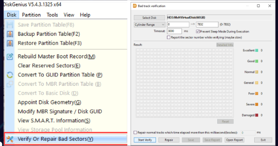

Verificar y Reparar Sectores Malos
Tambien permite verificar y reparar sectores defectuosos del disco duro
- Paso 1. Seleccione el disco que desea verificar o reparar sectores defectuosos y haga clic en Disco menú para elegir Verificar o reparar sectores defectuosos" , también, puede hacer clic con el botón derecho en el disco y elegir el menú contextual del formulario de opción.
- Paso 2. Haga clic en "Iniciar Verificar" botón y DiskGenius comienza a escanear el disco y verifica si hay algún sector defectuoso.
- Paso 3. Hacer clic en OK botón cuando termina el escaneo.
